Apply Here
Calendar
Resources
Locations
Contacts
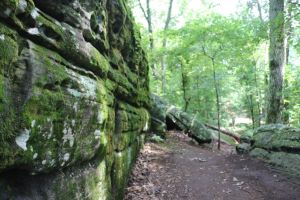
Rainbow Mountain Nature Preserve
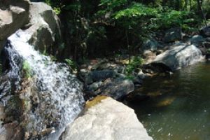
Cheaha Wilderness: Chinnabee Silent Trail
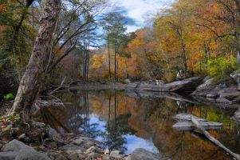
Buck's Pocket State Park
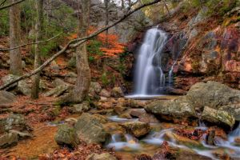
Oak Mountain State Park
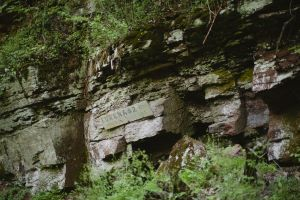
Red Mountain Park
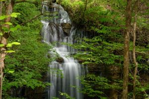
Keel Mountain Preserve
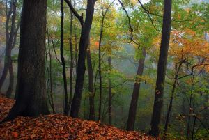
Monte Sano State Park
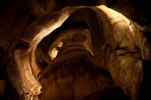
Rickwood Caverns State Park
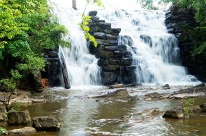
Chewacla State Park
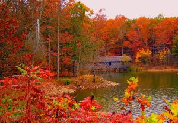
Green Mountain Nature Trail
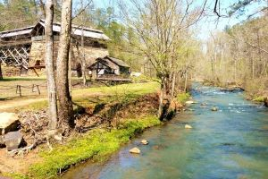
Tannehill IronWorks
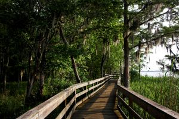
Historic Blakeley State Park